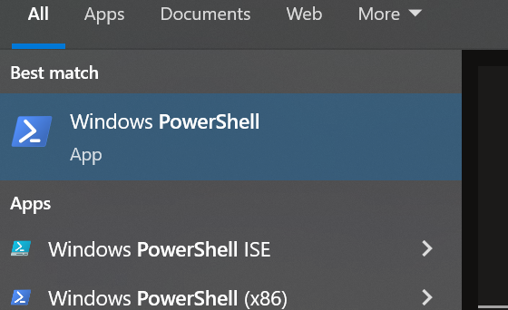
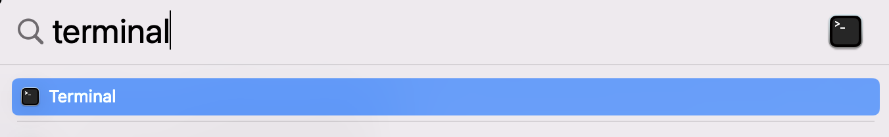
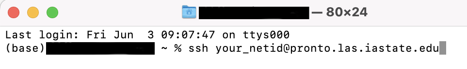
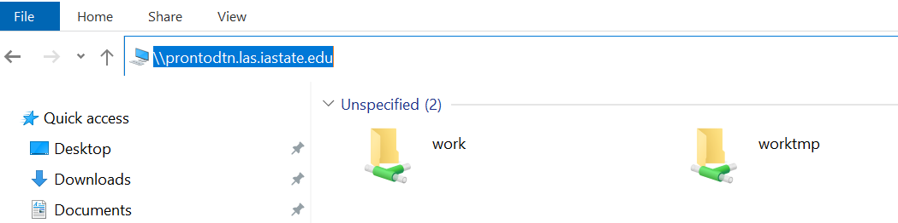
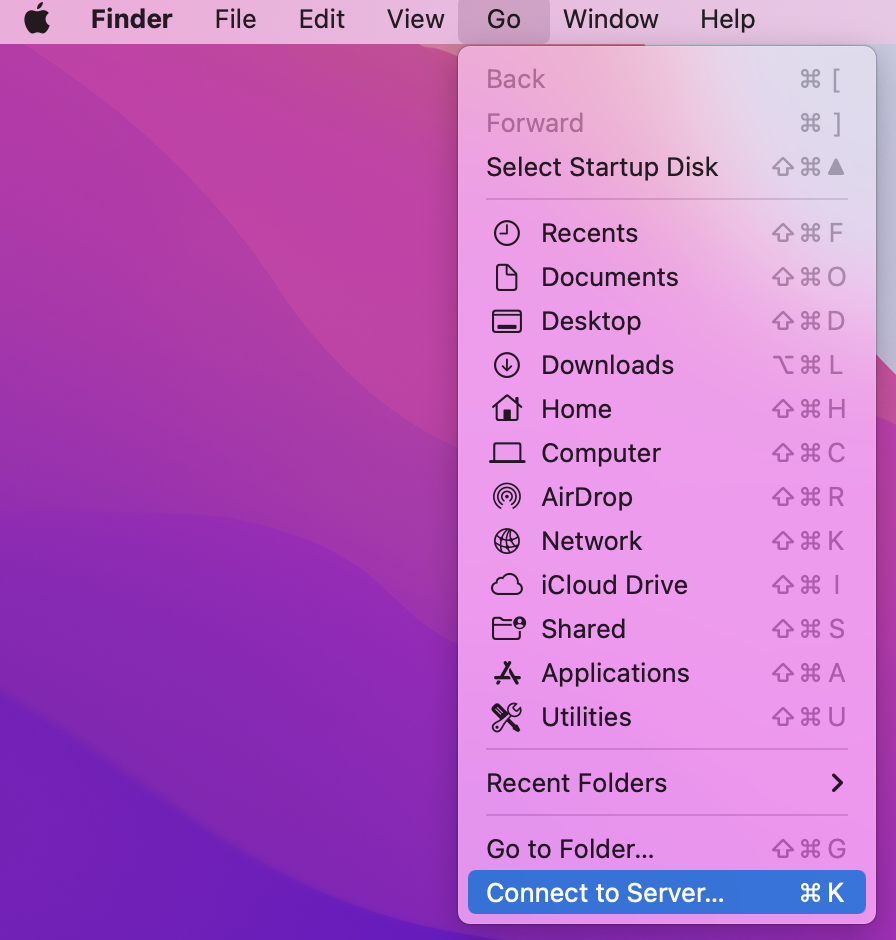

Chapter 5 Pronto
5.1 Connecting to the Pronto job scheduler
You connect to the pronto job scheduler through the PowerShell on Windows or the Terminal on Mac.
Windows
Type
powershellin the Windows Search Bar next to the Start MenuClick Windows PowerShell in the list to open the PowerShell

Type
ssh your_netid@pronto.las.iastate.edu
Type your net-id password
You should now see
[your_netid@pronto ~]$
Mac
- Do a spotlight search by clicking on the magnifying glass in the upper right corner of the screen
- Type
terminaland click Terminal in the list

- In the Terminal widow, type
ssh your_netid@pronto.las.iastate.edu

- Type your net-id password
5.2 Connecting to the Pronto data transfer node
You need to transfer your data to Pronto using the Pronto data transfer node (ProntoDTN). CSAFE has a folder for CSAFE users on ProntoDTN. The file path is prontodtn.las.iastate.edu > work > LAS > csafe-lab. Create a folder for yourself in the csafe-lab folder. Most users use their net-id as the folder name, but I think you can name it anything you want.
The work directory is not backed-up so don’t use this folder for long term storage.
Each user also has a home folder. These folders have limited storage so researchIT recommends only placing small files in the home folder. I find it easier to store everything in my work folder and not use my home folder at all.
Windows
- Open file explorer
- Type
\\prontodtn.las.iastate.eduin the top textbox

- Open the work folder
- Open the LAS folder
- Open the csafe-lab folder
- Create a new folder with your net-id as the name
Mac
- Select Go > Connect to Server

- Type
smb://prontodtn.las.iastate.eduin the text box. Click the + sign if you would like your computer to remember the server.

- Click Connect
- Enter your net-id and password
- Select Work and click OK.
- Open the LAS folder
- Open the csafe-lab folder
- Create a new folder with your net-id as the name
5.2.1 Transfering large amounts of data from ProntoDTN to LSS using SSH
If you want to transfer large amounts of data from the Pronto Data Transfer Node (ProntoDTN) to Large Scale Storage (LSS) do the following:
- Open the PowerShell on Windows or the Terminal on Mac.
- Connect to the Pronto Data Transfer Node by typing
ssh your_netid@prontodtn.las.iastate.edu - Enter your netid password
- Type
cp -r /work/LAS/csafe-lab/your_netid/copy_from_this_folder/ /lss/research/csafe-handwriting/copy_to_this_folder/
5.2.2 Transfering large amounts of data between ProntoDTN and your computer using Globus
If you have large amounts of data to transfer, researchIT recommends that you use Globus Connect Personal. Go to https://researchit.las.iastate.edu/how-transfer-files-pronto-globus to download Globus.
Instructions for transferring data with Globus are here: https://docs.globus.org/how-to/get-started/.
5.3 Running an R script on Pronto
There are two ways to run a script on Pronto:
- in an interactive session
- as a batch job
If I understand correctly, an interactive session is intended for troubleshooting your code. ResearchIT says, “Once you’ve got your program running in an interactive session please switch to an sbatch script if possible.” [https://researchit.las.iastate.edu/pronto?msclkid=3263c889c17811ec81e13068586d8872]
Pronto uses the Simple Linux Utility for Resource Management (Slurm) to allocate resources (computer nodes and clusters) to users [https://en.wikipedia.org/wiki/Slurm_Workload_Manager]. In order to run your script as a batch job, you need to write a Slurm file that includes information about your job and the resources your would like to request.
5.4 Interactive Sessions
5.4.1 Example: Start an interactive session
If you are off campus, connect to the ISU VPN (see ??)
Sign-in to Pronto (see 5).
In the Pronto terminal, type
$ srun --nodes 1 --tasks 4 --partition interactive --time 01:00:00 --pty bashThis starts an interactive session.
Load the module for R version 4.0.4. This version of R requires that a specific version of gcc be loaded first.
$ module load gcc/10.2.0-zuvaafu $ module load r/4.0.4-py3-4khjixyTell Pronto to install R packages in your csafe-lab work folder. (This is considered the best practice by ResearchIT https://researchit.las.iastate.edu/how-run-r-pronto?msclkid=865a487bc65e11ecbfd7e59a7ab1dc47.)
$ export R_LIBS_USER=/work/LAS/your-lab/yournetid/Rlibs $ mkdir -p $R_LIBS_USERStart the R interpreter
$ R
5.4.2 Example: Install a package from CRAN
- Start an interactive R session (see 5.4.1)
> install.packages("dplyr",lib="/work/LAS/csafe-lab/your_netid/Rlibs", repos="https://mirror.las.iastate.edu/CRAN")
5.4.3 Example: Install a package from Github
Occasionally, you might want to install a package that isn’t available on CRAN but is available on GitHub. This example shows how to do that on Pronto.
Start an interactive R session (see 5.4.1)
If you haven’t already, you need to install the devtools package
> install.packages("devtools",lib="/work/LAS/csafe-lab/your_netid/Rlibs", repos="https://mirror.las.iastate.edu/CRAN")Every GitHub repository url has the format https://github.com/GithubUsernam/GithubRepo. Use the GithubUsername/GithubRepo in the install_github function.
> devtools::install_github("GithubUsername/GithubRepo")
5.5 Batch Jobs
5.5.1 Example: A basic R script
If you are off campus, connect to the ISU VPN (see ??)
Sign-in to Pronto (see 5).
Open your csafe-lab work folder
prontodtn.las.iastate.edu > work > LAS > csafe-lab > your_netid(see 5.2)Create a new R script with the following lines of code:
a = 5 print(a)Save the script as
basic.R. Copy the script to your csafe-lab work folder.Create a text file for Slurm with the following text:
#!/bin/bash #SBATCH --nodes=1 # request one node #SBATCH --cpus-per-task=1 # ask for 1 cpu #SBATCH --mem=1G # asks for 1 GB of RAM #SBATCH --time=00:30:02 # ask that the job be allowed to run for 30 minutes and 2 seconds. # everything below this line is optional #SBATCH --output=/work/LAS/csafe-lab/your_netid/job_%J_out.txt # store console output #SBATCH --error=/work/LAS/csafe-lab/your_netid/job_%J_err.txt # store error messages module load r cd /work/LAS/csafe-lab/your_netid R --save < basic.RSave the file as
basic.txt.(Windows Only) If you are using Windows, your text file will likely have DOS line breaks instead of UNIX line breaks which will cause an error when the file is run on Pronto. Open Terminal in RStudio, use
cd folder/containing/text_fileto change directories to the folder containing your text file, and typedos2unix basic.txtto change the line breaks to UNIX format.Copy the text file to your csafe-lab work folder.
In the command line prompt where you are connected to Pronto, type
$ sbatch /work/LAS/csafe-lab/your_netid/basic.txtThis will add your job to the queue. The script is so short, your job will probably run immediately.
Two new files –
job_<job#>_err.txtandjob_<job#>_out.txt– should appear in your csafe-lab work folder. Ifbasic.Rran successfully, thejob_<job#>_outfile should contain> a = 5 > print(a) [1] 5 >and
job_<job#>_err.txtshould be blank. If the error file isn’t blank, troubleshoot the error(s). If you get stuck, email researchit@iastate.edu.
5.5.2 Example: Save a dataframe to a CSV file
In this example, I will show you how to save a dataframe to a csv file.
If you are off campus, connect to the ISU VPN (see ??)
Sign-in to Pronto (see 5).
Open your csafe-lab work folder
prontodtn.las.iastate.edu > work > LAS > csafe-lab > your_netid(see 5.2)Create a new R script with the following lines of code:
# draw 10 samples from normal distribution data = rnorm(10) # put in a dataframe df = data.frame(x=data) # save dataframe write.csv(df, "data.csv")Save the script as
dataframe.R. Copy the script to your csafe-lab work folder.Create a text file for Slurm with the following text:
#!/bin/bash #SBATCH --nodes=1 # request one node #SBATCH --cpus-per-task=1 # ask for 1 cpu #SBATCH --mem=1G # asks for 1 GB of RAM #SBATCH --time=00:30:02 # ask that the job be allowed to run for 30 minutes and 2 seconds. # everything below this line is optional #SBATCH --output=/work/LAS/csafe-lab/your_netid/job_%J_out.txt # store console output #SBATCH --error=/work/LAS/csafe-lab/your_netid/job_%J_err.txt # store error messages module load r cd /work/LAS/csafe-lab/your_netid R --save < dataframe.RSave the file as
dataframe.txt.(Windows Only) If you are using Windows, your text file will likely have DOS line breaks instead of UNIX line breaks which will cause an error when the file is run on Pronto. Open Terminal in RStudio, use
cd folder/containing/text_fileto change directories to the folder containing your text file, and typedos2unix dataframe.txtto change the line breaks to UNIX format.Copy the text file to your csafe-lab work folder.
In the command line prompt where you are connected to Pronto, type
$ sbatch /work/LAS/csafe-lab/your_netid/dataframe.txtThis will add your job to the queue. The script is so short, your job will probably run immediately.
The dataframe should be saved in a file
data.csvin your csafe-lab work folder. There should be two other new files –data.csv,job_<job#>_err.txtandjob_<job#>_out.txt– in your csafe-lab work folder as well. If the error file isn’t blank, troubleshoot the error(s). If you get stuck, email researchit@iastate.edu.
5.5.3 Example: Load data from a CSV file
In this example, we will load the csv file data.csv that we saved in Example 5.5.2.
If you are off campus, connect to the ISU VPN (see ??)
Sign-in to Pronto (see 5).
Open your csafe-lab work folder
prontodtn.las.iastate.edu > work > LAS > csafe-lab > your_netid(see 5.2)Double-check that the file
data.csvis still in your csafe-lab work folder. If you deleted it, follow the steps in example 5.5.2 to recreate it.Create a new R script with the following lines of code:
df = read.csv("data.csv") head(df)Save the script as
load.Rand copy it to you csafe-lab work folder.Create a text file for Slurm with the following text:
#!/bin/bash #SBATCH --nodes=1 # request one node #SBATCH --cpus-per-task=1 # ask for 1 cpu #SBATCH --mem=1G # asks for 1 GB of RAM #SBATCH --time=00:30:02 # ask that the job be allowed to run for 30 minutes and 2 seconds. # everything below this line is optional #SBATCH --output=/work/LAS/csafe-lab/your_netid/job_%J_out.txt # store console output #SBATCH --error=/work/LAS/csafe-lab/your_netid/job_%J_err.txt # store error messages module load r cd /work/LAS/csafe-lab/your_netid R --save < load.RSave the file as
load.txt.(Windows Only) If you are using Windows, your text file will likely have DOS line breaks instead of UNIX line breaks which will cause an error when the file is run on Pronto. Open Terminal in RStudio, use
cd folder/containing/text_fileto change directories to the folder containing your text file, and typedos2unix load.txtto change the line breaks to UNIX format.Copy the text file to your csafe-lab work folder.
In the command line prompt where you are connected to Pronto, type
$ sbatch /work/LAS/csafe-lab/your_netid/load.txtThis will add your job to the queue. The script is so short, your job will probably run immediately.
Open the file
job_<job#>_out.txtin your csafe-lab work folder and make sure that the first six lines of the dataframe were printed.
5.5.4 Example: Install R packages
Just like in Rstudio on your local machine, you will need to install any R packages that you want use. In this example, we will install futile.logger, doParallel, doRNG, and tidyverse so that we can use these packages in future examples.
If you are off campus, connect to the ISU VPN (see ??)
Sign-in to Pronto (see 5).
Open your csafe-lab work folder
prontodtn.las.iastate.edu > work > LAS > csafe-lab > your_netid(see 5.2)Create a new R script with the following lines of code:
install.packages(c("futile.logger", "doParallel", "doRNG", "tidyverse"), lib="/work/LAS/csafe-lab/your_netid/Rlibs", repos="https://mirror.las.iastate.edu/CRAN")The line starting with
lib=tells Pronto to install the R packages in your csafe-lab work folder. The line starting withrepos=tells Pronto which CRAN mirror to use. ResearchIT says that these two lines should always be used [https://researchit.las.iastate.edu/how-run-r-pronto]. Save the script asinstall_packages.R. Copy the script to your csafe-lab work folder.Create a text file for Slurm with the following text:
#!/bin/bash #SBATCH --nodes=1 # request one node #SBATCH --cpus-per-task=1 # ask for 1 cpu #SBATCH --mem=1G # asks for 1 GB of RAM #SBATCH --time=00:30:02 # ask that the job be allowed to run for 30 minutes and 2 seconds. # everything below this line is optional #SBATCH --output=/work/LAS/csafe-lab/your_netid/job_%J_out.txt # store console output #SBATCH --error=/work/LAS/csafe-lab/your_netid/job_%J_err.txt # store error messages export R_LIBS_USER=/work/LAS/csafe-lab/your_netid/Rlibs mkdir -p $R_LIBS_USER module load r cd /work/LAS/csafe-lab/your_netid R --save < install_packages.RSave the file as
install_packages.txt.(Windows Only) If you are using Windows, your text file will likely have DOS line breaks instead of UNIX line breaks which will cause an error when the file is run on Pronto. Open Terminal in RStudio, use
cd folder/containing/text_fileto change directories to the folder containing your text file, and typedos2unix install_packages.txtto change the line breaks to UNIX format.Copy the text file to your csafe-lab work folder.
In the command line prompt where you are connected to Pronto, type
$ sbatch /work/LAS/csafe-lab/your_netid/install_packages.txtThis will add your job to the queue. Just like on your local machine, it might take several minutes to install the packages.
There should be two other new files –
data.csv,job_<job#>_err.txtandjob_<job#>_out.txt– in your csafe-lab work folder.
5.5.5 Example: Run code in parallel
The main benefit of Pronto is that it can run code in parallel. In this example, I will show you how to run a for loop in parallel using the doParallel library. R has other packages for parallel computing, but ResearchIT uses doParallel in their how-to [https://researchit.las.iastate.edu/how-run-r-pronto] so that’s what I will use here.
If you completed Example 5.5.4 the doParallel package will already be installed. If you need to install the doParallel package see Examples 5.4.2 or 5.5.4 for instructions.
If you are off campus, connect to the ISU VPN (see ??)
Sign-in to Pronto (see 5).
Open your csafe-lab work folder
prontodtn.las.iastate.edu > work > LAS > csafe-lab > your_netid(see 5.2)Create a new R script with the following lines of code:
library(doParallel) nCores = as.integer(Sys.getenv("SLURM_CPUS_PER_TASK")) myCluster = parallel::makeCluster(nCores) doParallel::registerDoParallel(myCluster) results = foreach(i=1:10) %dopar% { rnorm(1000)} saveRDS(results, "parallel_results.rds")Save the script as
parallel.R. Copy the script to your csafe-lab work folder.Create a text file for Slurm with the following text:
#!/bin/bash #SBATCH --nodes=1 # request one node #SBATCH --cpus-per-task=10 # ask for 10 cpu #SBATCH --mem=1G # asks for 1 GB of RAM #SBATCH --time=00:30:02 # ask that the job be allowed to run for 30 minutes and 2 seconds. # everything below this line is optional #SBATCH --output=/work/LAS/csafe-lab/your_netid/job_%J_out.txt # store console output #SBATCH --error=/work/LAS/csafe-lab/your_netid/job_%J_err.txt # store error messages export R_LIBS_USER=/work/LAS/csafe-lab/your_netid/Rlibs module load r cd /work/LAS/csafe-lab/your_netid R --save < parallel.RSave the file as
parallel.txt.(Windows Only) If you are using Windows, your text file will likely have DOS line breaks instead of UNIX line breaks which will cause an error when the file is run on Pronto. Open Terminal in RStudio, use
cd folder/containing/text_fileto change directories to the folder containing your text file, and typedos2unix parallel.txtto change the line breaks to UNIX format.Copy the text file to your csafe-lab work folder.
In the command line prompt where you are connected to Pronto, type
$ sbatch /work/LAS/csafe-lab/your_netid/parallel.txtThe results of the parallel loop should be saved in
parallel.txtin your csafe-lab work folder.
5.5.6 Example: Check whether code is running in parallel
If you are off campus, connect to the ISU VPN (see ??)
Sign-in to Pronto (see 5).
Open your csafe-lab work folder
prontodtn.las.iastate.edu > work > LAS > csafe-lab > your_netid(see 5.2)Create a new R script with the following lines of code:
library(doParallel) library(doRNG) nCores = as.integer(Sys.getenv("SLURM_CPUS_PER_TASK")) myCluster = parallel::makeCluster(nCores) doParallel::registerDoParallel(myCluster) r1 = foreach(i=1:10) %dorng% { if (i==1){Sys.sleep(30)} time = Sys.time() saveRDS(object=time, file=paste0("time_", i,".rds")) }Save the script as
check_parallel.R. Copy the script to your csafe-lab work folder.Create a text file for Slurm with the following text:
#!/bin/bash #SBATCH --nodes=1 # request one node #SBATCH --cpus-per-task=10 # ask for 10 cpu #SBATCH --mem=1G # asks for 1 GB of RAM #SBATCH --time=00:30:02 # ask that the job be allowed to run for 30 minutes and 2 seconds. # everything below this line is optional #SBATCH --output=/work/LAS/csafe-lab/your_netid/job_%J_out.txt # store console output #SBATCH --error=/work/LAS/csafe-lab/your_netid/job_%J_err.txt # store error messages export R_LIBS_USER=/work/LAS/csafe-lab/your_netid/Rlibs module load r cd /work/LAS/csafe-lab/your_netid R --save < check_parallel.RSave the file as
check_parallel.txt.(Windows Only) If you are using Windows, your text file will likely have DOS line breaks instead of UNIX line breaks which will cause an error when the file is run on Pronto. Open Terminal in RStudio, use
cd folder/containing/text_fileto change directories to the folder containing your text file, and typedos2unix check_parallel.txtto change the line breaks to UNIX format.Copy the text file to your csafe-lab work folder.
In the command line prompt where you are connected to Pronto, type
$ sbatch /work/LAS/csafe-lab/your_netid/check_parallel.txtThe script should have created 10 RDS files in your csafe-lab work folder. Check the times recorded in each file. The first file should contain a time after the other files.
5.5.7 Example: Set the seed for the random number generator
If you run Example 5.5.5 multiple times, the numbers sampled from the normal distribution will likely be different each time. If you want to make the sample reproducible
(produce the same sample each time), set the seed for the random number generator. The most common way to set a seed is with the set.seed() function. This function does not work with %dopar% from the doParallel package, but it does work with %dorng%.
If you are off campus, connect to the ISU VPN (see ??)
Sign-in to Pronto (see 5).
Open your csafe-lab work folder
prontodtn.las.iastate.edu > work > LAS > csafe-lab > your_netid(see 5.2)Create a new R script with the following lines of code:
library(doParallel) library(doRNG) nCores = as.integer(Sys.getenv("SLURM_CPUS_PER_TASK")) myCluster = parallel::makeCluster(nCores) doParallel::registerDoParallel(myCluster) starting_seed = 300 set.seed(starting_seed) r1 = foreach(i=1:4) %dorng%{ runif(1) } set.seed(starting_seed) r2 = foreach(i=1:4) %dorng%{ runif(1) } identical(r1, r2)Save the script as
seed.R. Copy the script to your csafe-lab work folder.Create a text file for Slurm with the following text:
#!/bin/bash #SBATCH --nodes=1 # request one node #SBATCH --cpus-per-task=10 # ask for 10 cpu #SBATCH --mem=1G # asks for 1 GB of RAM #SBATCH --time=00:30:02 # ask that the job be allowed to run for 30 minutes and 2 seconds. # everything below this line is optional #SBATCH --output=/work/LAS/csafe-lab/your_netid/job_%J_out.txt # store console output #SBATCH --error=/work/LAS/csafe-lab/your_netid/job_%J_err.txt # store error messages export R_LIBS_USER=/work/LAS/csafe-lab/your_netid/Rlibs module load r cd /work/LAS/csafe-lab/your_netid R --save < seed.RSave the file as
seed.txt.(Windows Only) If you are using Windows, your text file will likely have DOS line breaks instead of UNIX line breaks which will cause an error when the file is run on Pronto. Open Terminal in RStudio, use
cd folder/containing/text_fileto change directories to the folder containing your text file, and typedos2unix seed.txtto change the line breaks to UNIX format.Copy the text file to your csafe-lab work folder.
In the command line prompt where you are connected to Pronto, type
$ sbatch /work/LAS/csafe-lab/your_netid/seed.txtOpen the
job_<job#>_out.txtfile to make sure that the result ofidentical(r1, r2)isTRUE.
5.5.8 Example: Use functions from dplyr and magrittr in parallel
The previous parallel examples used the base R functions rnorm and runif. If we want to use
functions from packages that we install, we need to pass the package names to the %dorng% operator. We will learn how to do this in this example.
If you haven’t already installed the tidyverse package, follow the steps in Example 4 to install the tidyverse or install dplyr and magrittr separately.
If you are off campus, connect to the ISU VPN (see ??)
Sign-in to Pronto (see 5).
Open your csafe-lab work folder
prontodtn.las.iastate.edu > work > LAS > csafe-lab > your_netid(see 5.2)Create a new R script with the following lines of code:
library(doParallel) library(doRNG) library(magrittr) library(dplyr) nCores = as.integer(Sys.getenv("SLURM_CPUS_PER_TASK")) myCluster = parallel::makeCluster(nCores) doParallel::registerDoParallel(myCluster) set.seed(100) r1 = foreach(i=1:10, .packages=c("dplyr", "magrittr")) %dorng%{ cluster_centers = df %>% slice_sample(n=40) } set.seed(100) r2 = foreach(i=1:10, .packages=c("dplyr", "magrittr")) %dorng%{ cluster_centers = df %>% slice_sample(n=40) } set.seed(200) r3 = foreach(i=1:10, .packages=c("dplyr", "magrittr")) %dorng%{ cluster_centers = df %>% slice_sample(n=40) } identical(r1, r2) identical(r1, r3)Save the script as
magrittr.R. Copy the script to your csafe-lab work folder.Create a text file for Slurm with the following text:
#!/bin/bash #SBATCH --nodes=1 # request one node #SBATCH --cpus-per-task=10 # ask for 10 cpu #SBATCH --mem=1G # asks for 1 GB of RAM #SBATCH --time=00:30:02 # ask that the job be allowed to run for 30 minutes and 2 seconds. # everything below this line is optional #SBATCH --output=/work/LAS/csafe-lab/your_netid/job_%J_out.txt # store console output #SBATCH --error=/work/LAS/csafe-lab/your_netid/job_%J_err.txt # store error messages export R_LIBS_USER=/work/LAS/csafe-lab/your_netid/Rlibs module load r cd /work/LAS/csafe-lab/your_netid R --save < magrittr.RSave the file as
magrittr.txt.(Windows Only) If you are using Windows, your text file will likely have DOS line breaks instead of UNIX line breaks which will cause an error when the file is run on Pronto. Open Terminal in RStudio, use
cd folder/containing/text_fileto change directories to the folder containing your text file, and typedos2unix magrittr.txtto change the line breaks to UNIX format.Copy the text file to your csafe-lab work folder.
In the command line prompt where you are connected to Pronto, type
$ sbatch /work/LAS/csafe-lab/your_netid/magrittr.txtOpen the
job_<job#>_out.txtfile to make sure that the result ofidentical(r1, r2)isTRUEandidentical(r1, r3)isFALSE.
5.5.9 Example: Use a user-defined function to save results inside a parallel loop
If you are off campus, connect to the ISU VPN (see ??)
Sign-in to Pronto (see 5).
Open your csafe-lab work folder
prontodtn.las.iastate.edu > work > LAS > csafe-lab > your_netid(see 5.2)Create a new R script with the following lines of code:
library(doParallel) library(doRNG) source("parallel_save.R") nCores = as.integer(Sys.getenv("SLURM_CPUS_PER_TASK")) myCluster = parallel::makeCluster(nCores) doParallel::registerDoParallel(myCluster) starting_seed = 300 set.seed(starting_seed) r1 = foreach(i=1:10) %dorng% { save_sample(n=10000, filename=paste0("sample_",i,".rds")) }Save the script as
run_parallel_save.R. Copy the script to your csafe-lab work folder.Create a text file for Slurm with the following text:
#!/bin/bash #SBATCH --nodes=1 # request one node #SBATCH --cpus-per-task=10 #SBATCH --mem=2G #SBATCH --time=00:15:00 # everything below this line is optional #SBATCH --output=/work/LAS/csafe-lab/your_netid/job_%J_out.txt # store console output #SBATCH --error=/work/LAS/csafe-lab/your_netid/job_%J_err.txt # store error messages export R_LIBS_USER=/work/LAS/csafe-lab/your_netid/Rlibs module load r cd /work/LAS/csafe-lab/your_netid R --save < run_parallel_save.RSave the file as
parallel_save.txt.(Windows Only) If you are using Windows, your text file will likely have DOS line breaks instead of UNIX line breaks which will cause an error when the file is run on Pronto. Open Terminal in RStudio, use
cd folder/containing/text_fileto change directories to the folder containing your text file, and typedos2unix parallel_save.txtto change the line breaks to UNIX format.Copy the text file to your csafe-lab work folder.
In the command line prompt where you are connected to Pronto, type
$ sbatch /work/LAS/csafe-lab/your_netid/parallel_save.txtThere should be ten rds files names sample_1.rds, sample_2.rds, etc. in your csafe-lab folder.
5.5.10 Example: Create a log file
In this example we will create a simple log file using the futile.logger package.
If you are off campus, connect to the ISU VPN (see ??)
Sign-in to Pronto (see 5).
Open your csafe-lab work folder
prontodtn.las.iastate.edu > work > LAS > csafe-lab > your_netid(see 5.2)Create a new R script with the following lines of code:
library(futile.logger) futile.logger::flog.appender(appender.file("log_file.txt"), name='log') futile.logger::flog.info("start script...", name='log') a = 5 futile.logger::flog.info("variable a = %d", a, name='log')Save the script as
log.R. Copy the script to your csafe-lab work folder.Create a text file for Slurm with the following text:
#!/bin/bash #SBATCH --nodes=1 # request one node #SBATCH --cpus-per-task=10 # ask for 10 cpu #SBATCH --mem=1G # asks for 1 GB of RAM #SBATCH --time=00:30:02 # ask that the job be allowed to run for 30 minutes and 2 seconds. # everything below this line is optional #SBATCH --output=/work/LAS/csafe-lab/your_netid/job_%J_out.txt # store console output #SBATCH --error=/work/LAS/csafe-lab/your_netid/job_%J_err.txt # store error messages export R_LIBS_USER=/work/LAS/csafe-lab/your_netid/Rlibs module load r cd /work/LAS/csafe-lab/your_netid R --save < log.RSave the file as
log.txt.(Windows Only) If you are using Windows, your text file will likely have DOS line breaks instead of UNIX line breaks which will cause an error when the file is run on Pronto. Open Terminal in RStudio, use
cd folder/containing/text_fileto change directories to the folder containing your text file, and typedos2unix log.txtto change the line breaks to UNIX format.Copy the text file to your csafe-lab work folder.
In the command line prompt where you are connected to Pronto, type
$ sbatch /work/LAS/csafe-lab/your_netid/log.txtA log file called
log_file.txtshould appear in your csafe-lab work folder. The contents of the log should look likeINFO [2022-05-04 10:42:37] start script... INFO [2022-05-04 10:42:37] variable a = 5
5.5.11 Example: Write a log message inside a parallel loop
If you are off campus, connect to the ISU VPN (see ??)
Sign-in to Pronto (see 5).
Open your csafe-lab work folder
prontodtn.las.iastate.edu > work > LAS > csafe-lab > your_netid(see 5.2)Create a new R script with the following lines of code:
library(doParallel) library(futile.logger) nCores = as.integer(Sys.getenv("SLURM_CPUS_PER_TASK")) myCluster = parallel::makeCluster(nCores, outfile="log_parallel_loop.txt") doParallel::registerDoParallel(myCluster) # Parallel loop r1 = foreach(i=1:4, .packages=c("futile.logger")) %dorng%{ runif(1) futile.logger::flog.info("Finished iteration %d", i) }Save the script as
parallel_log.R. Copy the script to your csafe-lab work folder.Create a text file for Slurm with the following text:
#!/bin/bash #SBATCH --nodes=1 # request one node #SBATCH --cpus-per-task=4 # ask for 4 cpu #SBATCH --mem=1G # asks for 1 GB of RAM #SBATCH --time=00:30:00 # ask that the job be allowed to run for 30 minutes and 0 seconds. # everything below this line is optional #SBATCH --output=/work/LAS/csafe-lab/your_netid/job_%J_out.txt # store console output #SBATCH --error=/work/LAS/csafe-lab/your_netid/job_%J_err.txt # store error messages export R_LIBS_USER=/work/LAS/csafe-lab/your_netid/Rlibs module load r cd /work/LAS/csafe-lab/your_netid R --save < parallel_log.RSave the file as
parallel_log.txt.(Windows Only) If you are using Windows, your text file will likely have DOS line breaks instead of UNIX line breaks which will cause an error when the file is run on Pronto. Open Terminal in RStudio, use
cd folder/containing/text_fileto change directories to the folder containing your text file, and typedos2unix parallel_log.txtto change the line breaks to UNIX format.Copy the text file to your csafe-lab work folder.
In the command line prompt where you are connected to Pronto, type
$ sbatch /work/LAS/csafe-lab/your_netid/parallel_log.txtA log file called
log_parallel_loop.txtshould appear in your csafe-lab work folder. The contents of the log should look likestarting worker pid=149912 on localhost:11324 at 15:05:55.201 starting worker pid=149924 on localhost:11324 at 15:05:55.452 starting worker pid=149936 on localhost:11324 at 15:05:55.706 starting worker pid=149948 on localhost:11324 at 15:05:55.963 Loading required package: foreach Loading required package: rngtools Loading required package: foreach Loading required package: rngtools Loading required package: foreach Loading required package: foreach Loading required package: rngtools Loading required package: rngtools INFO [2022-06-17 15:05:56] Finished iteration 3 INFO [2022-06-17 15:05:56] Finished iteration 1 INFO [2022-06-17 15:05:56] Finished iteration 2 INFO [2022-06-17 15:05:56] Finished iteration 4
5.6 Pronto Commands
5.6.3 View your job(s) in the Pronto queue
In pronto terminal (not in an interactive session), type
$ squeue -u your-netid
5.7 Install the handwriter package
5.7.1 Install handwriter from CRAN
CSAFE created an R package for statistical handwriting analysis called handwriter. The handwriter package requires a number of other R packages, some of which caused errors when I tried to install handwriter in an interactive session on Pronto following the instructions in 5.4.2. ResearchIT helped me figure out how to install the problem packages and ultimately install handwriter. This section records the step-by-step details of how I was able to install handwriter. My hope is that you will also be able to sucessfully install handwriter if you follow these steps. If you run into problems, email researchit@iastate.edu.
If you are off campus, connect to the ISU VPN (see ??)
Sign-in to Pronto (see 5).
Some of the packages used by handwriter are only available on Pronto for R 4.0.4. Start the R 4.0.4 interpreter in an interactive session on Pronto.
$ srun --nodes 1 --tasks 4 --partition interactive --time 01:00:00 --pty bash $ module purge $ module load gcc/10.2.0-zuvaafu $ module load r/4.0.4-py3-4khjixy $ export R_LIBS_USER=/work/LAS/csafe-lab/yournetid/Rlibs $ mkdir -p $R_LIBS_USER $ RTry to install the handwriter package
> install.packages("handwriter",lib="/work/LAS/csafe-lab/your_netid/Rlibs", repos="https://mirror.las.iastate.edu/CRAN")I received error messages stating that the packages igraph, randomForest, and magick could not be installed. I had to install these packages separately.
Install igraph
> install.packages("igraph",lib="/work/LAS/csafe-lab/your_netid/Rlibs", repos="https://mirror.las.iastate.edu/CRAN")Then randomForest
> install.packages("https://cran.r-project.org/src/contrib/Archive/randomForest/randomForest_4.6-14.tar.gz", repos=NULL, type="source",lib="/work/LAS/csafe-lab/your_netid/Rlibs")Install magick
> install.packages("magick", configure.vars=c("INCLUDE_DIR='. -D_GLIBCXX_USE_CXX11_ABI=0 -fopenmp -DMAGICKCORE_HDRI_ENABLE=1 -DMAGICKCORE_QUANTUM_DEPTH=16 -I/opt/rit/spack-app/linux-rhel7-x86_64/gcc-4.8.5/image-magick-7.0.5-9-6xplmhr3zv6pu2frzsuyof2coe4tuguh/include/ImageMagick-7' LIB_DIR='. -D_GLIBCXX_USE_CXX11_ABI=0 -Wl,-rpath,/opt/rit/spack-app/linux-rhel7-x86_64/gcc-4.8.5/image-magick-7.0.5-9-6xplmhr3zv6pu2frzsuyof2coe4tuguh/lib -L/opt/rit/spack-app/linux-rhel7-x86_64/gcc-4.8.5/image-magick-7.0.5-9-6xplmhr3zv6pu2frzsuyof2coe4tuguh/lib -lMagick++-7.Q16HDRI -lMagickWand-7.Q16HDRI -lMagickCore-7.Q16HDRI #'"), lib="/work/LAS/csafe-lab/your_netid/Rlibs", repos="https://mirror.las.iastate.edu/CRAN")
5.7.2 Install handwriter from GitHub
If you are off campus, connect to the ISU VPN (see ??)
Sign-in to Pronto (see 5).
Some of the packages used by handwriter are only available on Pronto for R 4.0.4. Start the R 4.0.4 interpreter in an interactive session on Pronto.
$ srun --nodes 1 --tasks 4 --partition interactive --time 01:00:00 --pty bash $ module purge $ module load gcc/10.2.0-zuvaafu $ module load r/4.0.4-py3-4khjixy $ export R_LIBS_USER=/work/LAS/csafe-lab/yournetid/Rlibs $ mkdir -p $R_LIBS_USER $ RInstall devtools. Nick Booher at ResearchIT told me that Pronto’s version of R is too old to run the latest version of devtools. He told be to run the following install instead:
install.packages("https://github.com/r-lib/devtools/archive/refs/tags/v2.4.3.tar.gz", repos=NULL, type="source", lib = "/work/LAS/csafe-lab/your_netid/Rlibs")- Returned error about trouble installing magick, random forest, and rjags.
- I installed randomforest by hand:
install.packages("https://cran.r-project.org/src/contrib/Archive/randomForest/randomForest_4.6-14.tar.gz", repos=NULL, type="source",lib="/work/LAS/csafe-lab/your_netid/Rlibs")- I installed magick by hand:
install.packages("magick",
configure.vars=c("INCLUDE_DIR='. -D_GLIBCXX_USE_CXX11_ABI=0 -fopenmp -DMAGICKCORE_HDRI_ENABLE=1 -DMAGICKCORE_QUANTUM_DEPTH=16 -I/opt/rit/spack-app/linux-rhel7-x86_64/gcc-4.8.5/image-magick-7.0.5-9-6xplmhr3zv6pu2frzsuyof2coe4tuguh/include/ImageMagick-7' LIB_DIR='. -D_GLIBCXX_USE_CXX11_ABI=0 -Wl,-rpath,/opt/rit/spack-app/linux-rhel7-x86_64/gcc-4.8.5/image-magick-7.0.5-9-6xplmhr3zv6pu2frzsuyof2coe4tuguh/lib -L/opt/rit/spack-app/linux-rhel7-x86_64/gcc-4.8.5/image-magick-7.0.5-9-6xplmhr3zv6pu2frzsuyof2coe4tuguh/lib -lMagick++-7.Q16HDRI -lMagickWand-7.Q16HDRI -lMagickCore-7.Q16HDRI #'"),
lib="/work/LAS/csafe-lab/srein/Rlibs",
repos="https://mirror.las.iastate.edu/CRAN")5.8 Trouble-Shooting
5.8.1 Line breaks error
If you are using Windows and you try to run a text file created on Windows on Pronto, you will likely get the following error:
sbatch: error: Batch script contains DOS line breaks (\\r\\n)
sbatch: error: instead of expected UNIX line breaks (\\n).One way to fix the problem is to - Open Rstudio - Go to Tools > Terminal > New Terminal - Changes the directory to the folder containing basic.txt by typing ‘cd /documents/my/folder’ without the quotes and hitting enter. - Type ‘dos2unix basic.txt’ without the quotes and hit enter.